This R package provides tools for the analysis of conservation data to assess risks to objects and collections. It includes functions for calculating preservation metrics and predicting mould growth, which can be used to compare spaces for potential object risks or evaluate improvements after conservation actions. These functions can be combined with others in the package to estimate required changes and/or reduce energy consumption. The package aims to support data-driven decision-making for storage and display environments.
The examples below demonstrate the application of these functions to data and illustrate their behavior across various temperature and humidity ranges, showcasing their performance under different environmental conditions.
# Temperature and humidity grid to demonstrate functions
Temp <- seq(0, 60, 0.25)
RH <- seq(0, 100, 1)
TRHgrid <-
expand.grid(Temp, RH) |>
tibble() |>
rename(Temp = Var1, RH = Var2) Mould
Mould Isoline and Growth Rates
calcMould_Zeng
The Zeng et al. (2023) model for predicting mould growth is a dynamic model that considers temperature and relative humidity to assess the risk of mould formation. This model was developed to predict the risk of mould growth in building envelopes under various conditions. It establishes an isoline model describing mould growth on surfaces and predicts growth rates between and outside the isoline areas by modifying the Sautour model for relevant air temperature and humidity conditions.
The code provided generates several visualisations to help understand this model. First, a contour plot shows the relationship between temperature, relative humidity, and mould growth potential across a grid of temperature and humidity values. A time series plot illustrates how the mould growth risk changes over time in relation to relative humidity. A bar chart displays the distribution of mould growth risk categories. These visualisations help to identify high-risk periods or conditions that may require inspection or intervention to prevent mould.
See function documentation for more details
calcMould_Zeng
Zeng L, Chen Y, Ma M, et al. Prediction of mould growth rate within building envelopes: development and validation of an improved model. Building Services Engineering Research and Technology. 2023;44(1):63-79. doi:10.1177/01436244221137846
TRHgrid |>
mutate(Mould_LIM = calcMould_Zeng(Temp, RH)) |>
ggplot(aes(Temp, RH, z = Mould_LIM)) +
geom_contour_filled(bins = 20) +
labs(title = "Mould Isoline Limit: LM0", fill = "RH Limit") +
theme_bw()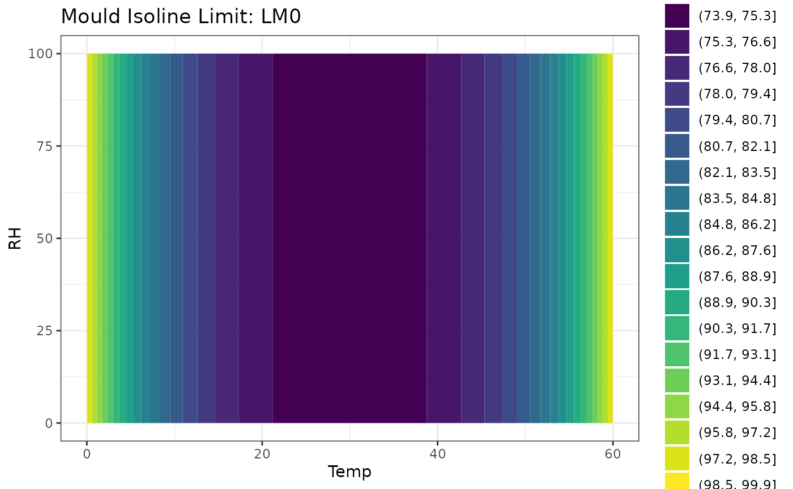
# TRHgrid |>
# mutate(Mould_growth = calcMould_Zeng(Temp, RH, label = TRUE)) |>
# ggplot(aes(Temp, RH, fill = Mould_growth, group = Mould_growth)) +
# # geom_raster() +
# geom_contour_filled() +
# labs(title = "Mould Growth Rates", fill = "Growth Rates") +
# # scale_fill_brewer(palette = "Set2") +
# theme_bw()
head(mydata) |>
mutate(
Mould_LIM0 = calcMould_Zeng(Temp, RH),
Mould_growth_rate = calcMould_Zeng(Temp, RH, label = TRUE),
)
#> # A tibble: 6 × 7
#> Site Sensor Date Temp RH Mould_LIM0 Mould_growth_rate
#> <chr> <chr> <dttm> <dbl> <dbl> <dbl> <dbl>
#> 1 London Room 1 2024-01-01 00:00:00 21.8 36.8 75.1 0
#> 2 London Room 1 2024-01-01 00:15:00 21.8 36.7 75.1 0
#> 3 London Room 1 2024-01-01 00:29:59 21.8 36.6 75.1 0
#> 4 London Room 1 2024-01-01 00:44:59 21.7 36.6 75.1 0
#> 5 London Room 1 2024-01-01 00:59:59 21.7 36.5 75.1 0
#> 6 London Room 1 2024-01-01 01:14:59 21.7 36.2 75.1 0
mydata |>
mutate(Mould_LIM0 = calcMould_Zeng(Temp, RH)) |>
ggplot() +
geom_line(aes(Date, Mould_LIM0), col = "purple") +
geom_line(aes(Date, RH), col = "blue") +
labs(title = "Mould Isoline Limit",
y = "Mould Limit (purple) and Humidity (blue)") +
theme_bw()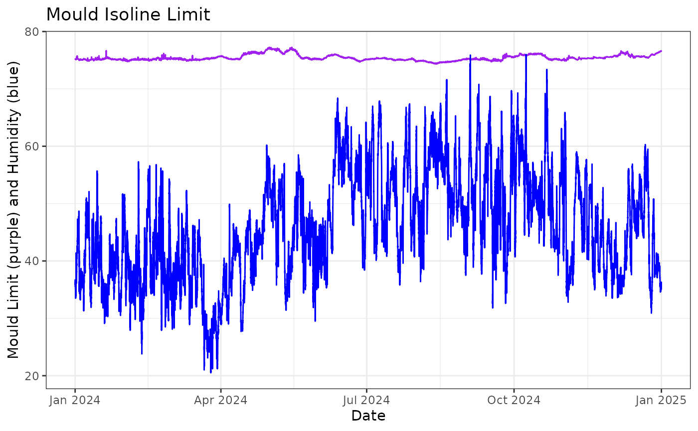
mydata |>
mutate(Mould_growth_rate = calcMould_Zeng(Temp, RH, label = TRUE)) |>
filter(!is.na(Mould_growth_rate)) |>
ggplot() +
geom_bar(aes(Mould_growth_rate, fill = Mould_growth_rate)) +
coord_flip() +
labs(title = "Distribution of mould growth risk categories",
y = NULL, x = NULL) +
theme_bw()
Mould Index
calcMould_VTT
The VTT model, developed by the Technical Research Centre of Finland
(VTT), is a mathematical approach for predicting mould growth on various
building materials. It uses a Mould Index scale from 0 to 6 to quantify
mould growth potential based on temperature, relative humidity, time,
and material properties. The model accounts for growth initiation,
intensity, maximum levels, and decline during unfavorable conditions. It
has been expanded from its original focus on wood to include different
material sensitivity classes (see calcMould_VTT for more
details).
- 0 = No mould growth
- 1 = Small amounts of mould growth on surface visible under microscope
- 2 = Several local mould growth colonies on surface visible under microscope
- 3 = Visual findings of mould on surface <10% coverage or 50% coverage under microsocpe
- 4 = Visual findings of mould on surface 10-50% coverage or >50% coverage under microscope
- 5 = Plenty of growth on surface >50% visual coverage
- 6 = Heavy and tight growth, coverage almost 100%
Hukka, A., & Viitanen, H. A. (1999). A mathematical model of mould growth on wooden material. Wood Science and Technology, 33(6), 475-485.
TRHgrid |>
mutate(Mould_Index = calcMould_VTT(Temp, RH)) |>
filter(Mould_Index > 0) |>
ggplot(aes(Temp, RH, z = Mould_Index)) +
geom_contour_filled(bins = 20) +
labs(title = "VTT Model", fill = "Mould Index") +
theme_bw()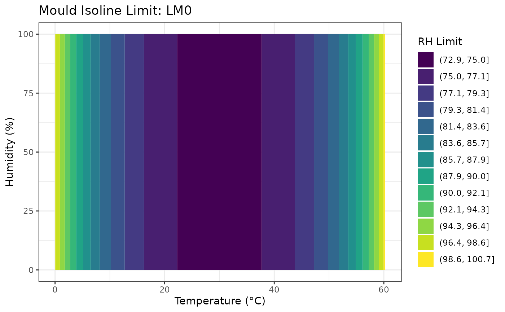
mydata |>
mutate(Mould_VTT = calcMould_VTT(Temp, RH))
#> # A tibble: 35,136 × 6
#> Site Sensor Date Temp RH Mould_VTT
#> <chr> <chr> <dttm> <dbl> <dbl> <dbl>
#> 1 London Room 1 2024-01-01 00:00:00 21.8 36.8 0
#> 2 London Room 1 2024-01-01 00:15:00 21.8 36.7 0
#> 3 London Room 1 2024-01-01 00:29:59 21.8 36.6 0
#> 4 London Room 1 2024-01-01 00:44:59 21.7 36.6 0
#> 5 London Room 1 2024-01-01 00:59:59 21.7 36.5 0
#> 6 London Room 1 2024-01-01 01:14:59 21.7 36.2 0
#> 7 London Room 1 2024-01-01 01:29:59 21.7 36.3 0
#> 8 London Room 1 2024-01-01 01:44:59 21.7 36.4 0
#> 9 London Room 1 2024-01-01 01:59:59 21.7 36 0
#> 10 London Room 1 2024-01-01 02:14:59 21.6 36 0
#> # ℹ 35,126 more rows
mydata |>
mutate(Mould_VTT = calcMould_VTT(Temp, RH)) |>
ggplot() +
geom_line(aes(Date, Mould_VTT), col = "purple") +
# geom_line(aes(Date, RH), col = "blue") +
labs(title = "VTT Model: Mould Index", x = NULL, y = "Mould Index") +
theme_bw()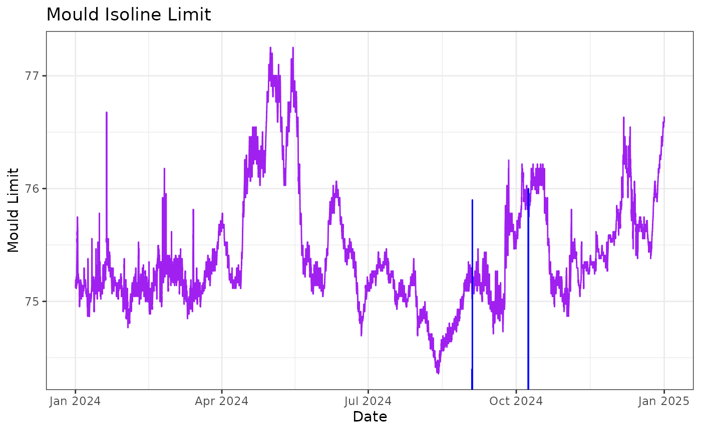
Lifetime multiplier
calcLM
The calcLM function calculates the lifetime multiplier for chemical degradation of objects based on temperature and relative humidity conditions. This metric provides an estimate of an object’s expected lifetime relative to standard conditions (20°C and 50% RH), with values closer to 1 indicating more suitable environments. The function incorporates the Arrhenius equation to account for temperature effects and a power law relationship for relative humidity, making it applicable to various materials such as paper, synthetic films, and dyes. This approach allows conservators to assess environmental conditions and identify periods when objects may be at higher risk of degradation.
Michalski, S. (2002). Double the life for each five-degree drop, more than double the life for each halving of relative humidity. In R. Vontobel (Ed.), Preprints of the 13th ICOM-CC Triennial Meeting in Rio de Janeiro (Vol. I, pp. 66-72). London: James & James.
TRHgrid |>
mutate(LifeTime = calcLM(Temp, RH)) |>
ggplot(aes(Temp, RH, z = LifeTime)) +
geom_contour_filled(bins = 20) +
labs(title = "Lifetime multiplier", fill = "Lifetime") +
theme_bw()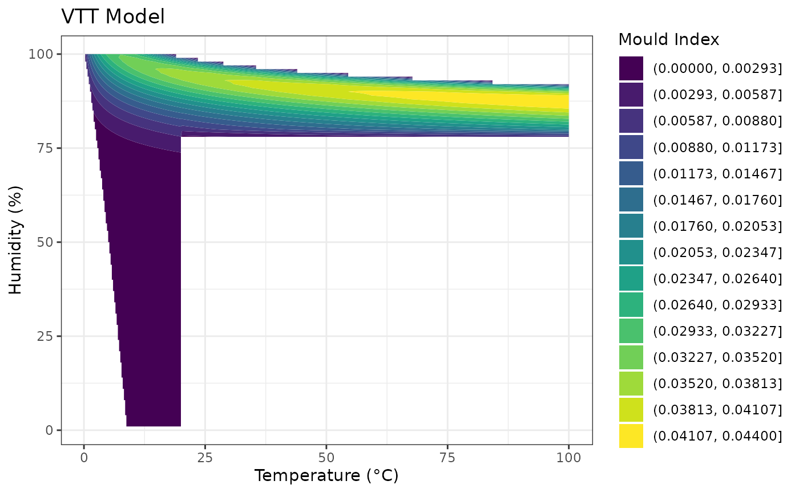
mydata |>
mutate(Lifetime = calcLM(Temp, RH)) |>
ggplot() +
geom_line(aes(Date, Lifetime), col = "hotpink", size = 1) +
# add 20C and 50%RH reference line
geom_hline(yintercept = calcLM(20, 50), col = "violet", size = 1) +
labs(
title = "Lifetime multiplier of 'mydata'", x = NULL, y = NULL,
subtitle = "Lifetime multiplier (pink) and 20C and 50%RH reference line") +
theme_bw()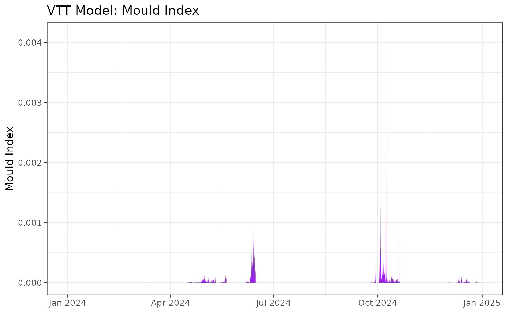
mydata |>
mutate(Lifetime = calcLM(Temp, RH)) |>
ggplot() +
geom_density(aes(Lifetime), fill = "hotpink", alpha = 0.4) +
# add 20C and 50%RH reference line
geom_vline(xintercept = calcLM(20, 50), col = "violet", size = 1) +
labs(title = "Lifetime multiplier", x = NULL,
subtitle = "20C and 50%RH reference line") +
theme_bw()Preservation Index
calcPI
The Preservation Index, developed by the Image Permanence Institute,
is a chemical kinetics metric that determines the rate of deterioration
of materials based on temperature and relative humidity. The
calcPI function returns the estimated years to
deterioration, with higher values indicating conditions that are more
hygro-thermodynamically favorable for an object.
More information on the Preservation Index can be found here: https://s3.cad.rit.edu/ipi-assets/publications/understanding_preservation_metrics.pdf
# Preservation Index plotted at different temperature and relative humidity
TRHgrid |>
mutate(PI = calcPI(Temp, RH)) |>
ggplot(aes(Temp, RH, z = PI)) +
geom_contour_filled(bins = 20) +
labs(title = "Preservation Index", fill = "PI") +
theme_bw()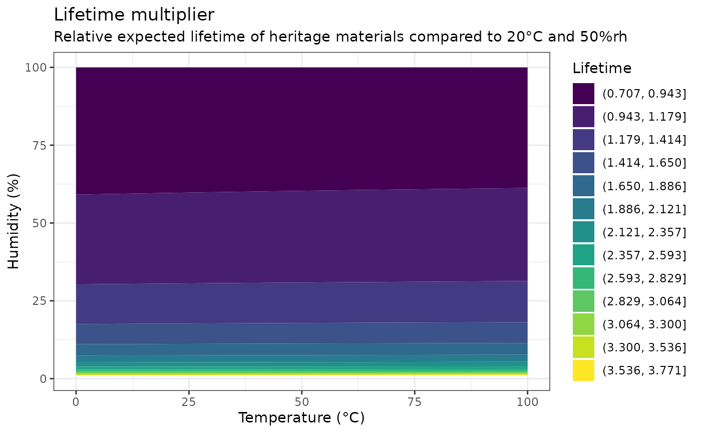
# Log-Preservation Index
TRHgrid |>
mutate(PI_log10 = calcPI(Temp, RH) |> log10()) |>
ggplot(aes(Temp, RH, z = PI_log10)) +
geom_contour_filled(bins = 20) +
labs(title = "Log Preservation Index", fill = "log10(PI)") +
theme_bw()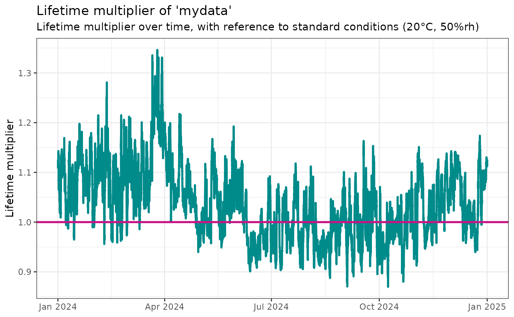
# Applying the Preservation Index on `mydata`
mydata |>
mutate(PI = calcPI(Temp, RH)) |>
ggplot() +
geom_line(aes(Date, Temp), col = "red", alpha = 0.1) +
geom_line(aes(Date, RH), col = "blue", alpha = 0.1) +
geom_line(aes(Date, PI), col = "hotpink", size = 1) +
# add 20C and 50%RH reference line
geom_hline(yintercept = calcPI(20, 50), col = "violet", size = 1) +
labs(
title = "Preservation Index", x = NULL, y = NULL,
subtitle = "Temperature (red), Humidity (blue), Preservation Index, years (pink)") +
theme_bw()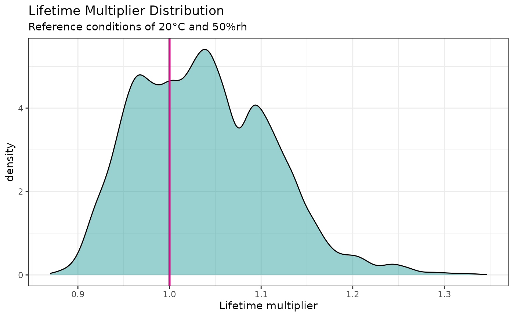
mydata |>
mutate(PI = calcPI(Temp, RH)) |>
ggplot() +
geom_density(aes(PI), fill = "hotpink", alpha = 0.4) +
# add 20C and 50%RH reference line
geom_vline(xintercept = calcPI(20, 50), col = "violet", size = 1) +
labs(title = "Preservation Index", x = NULL,
subtitle = "20C and 50%RH reference line") +
theme_bw()Equilibrium Moisture Content
calcEMC_wood
Equilibrium Moisture Content (EMC) determine the ideal relative humidity for storing materials, as it indicates the point at which an object neither gains nor loses moisture from its environment. Maintaining appropriate EMC levels prevents issues such as mold growth, warping, cracking, or dimensional changes in organic materials like wood, textiles, and paper.
- Wood: The safe EMC range for wood is typically between 6% and 20%. This range helps to prevent issues such as warping, cracking, and mold growth, which can occur if the moisture content falls below or exceeds these levels.
Simpson, W. T. (1998). “Equilibrium moisture content of wood in outdoor locations in the United States and worldwide.” Res. Note FPL-RN-0268. U.S. Department of Agriculture, Forest Service, Forest Products Laboratory.
Hailwood, A. J., & Horrobin, S. (1946). “Absorption of water by polymers.” Journal of the Society of Chemical Industry, 65(12), 499-502.
# EMC plotted at different temperature and relative humidity
TRHgrid |>
mutate(EMC = calcEMC_wood(Temp, RH)) |>
ggplot(aes(Temp, RH, z = EMC)) +
geom_contour_filled(bins = 20) +
labs(title = "Equilibrium Moisture Content (EMC)", fill = "EMC") +
theme_bw()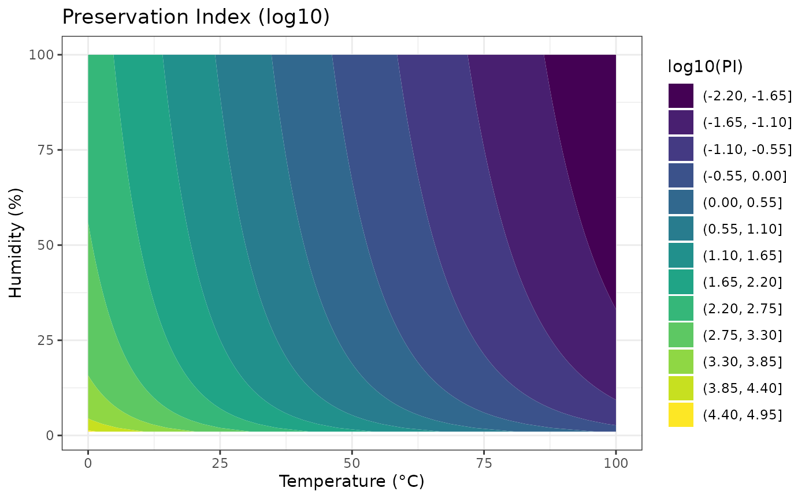
# EMC on `mydata`
mydata |>
mutate(EMC = calcEMC_wood(Temp, RH)) |>
ggplot() +
geom_line(aes(Date, EMC), col = "violet", size = 1) +
labs(title = "Equilibrium Moisture Content (EMC)", x = NULL, y = "EMC") +
theme_bw()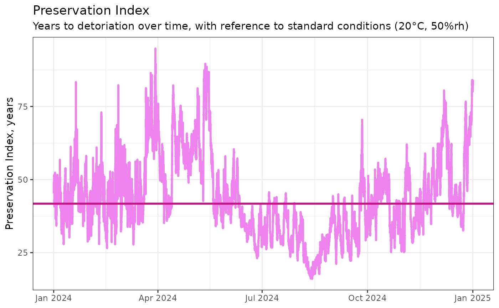
mydata |>
mutate(EMC = calcEMC_wood(Temp, RH)) |>
ggplot() +
geom_density(aes(EMC), fill = "hotpink", alpha = 0.4) +
geom_vline(xintercept = calcEMC_wood(20, 50), col = "violet", size = 1) +
labs(title = "Equilibrium Moisture Content", x = NULL,
subtitle = "20C and 50%RH reference line") +
theme_bw()